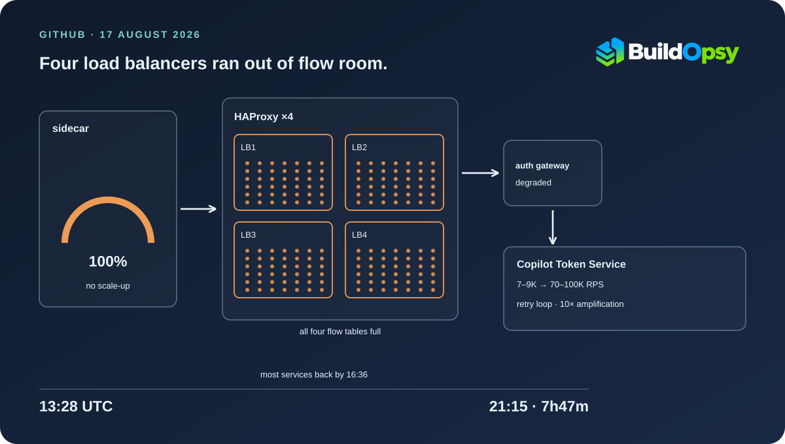
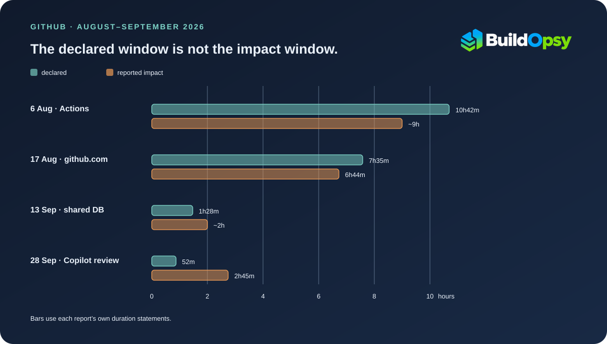

1. Three Clock Faces on One Outage
GitHub's status page and its availability report describe the same 17 August failure, and they do not start it at the same minute. The status page root-cause analysis is explicit: "from 13:28–21:15 UTC (7h 47m)." The company's chief technology officer repeated the 7-hour-47-minute figure three days later, without restating the start time. The August availability report dates the incident from 13:40 and calls it 7 hours and 35 minutes. Both end at 21:15. The gap is twelve minutes, and it is the gap between the moment GitHub's telemetry says failures began and the moment the first public update appeared on the status page.
That is a small discrepancy and it is worth being exact about why it exists, because the same structure recurs in every incident in this article. There are three clocks: when the failure starts, when the company tells anyone, and when the company says it is over. The declared duration usually runs from the second clock to the third. Customer impact runs from the first to whenever the last affected request succeeded, which is often later than the resolution post.
So the numbers do not nest. On 17 August, impact lasted 6 hours 44 minutes against a declared 7 hours 35 minutes or 7 hours 47 minutes. At the peak, 56.07% of front-door requests to the affected services failed or ran slow at the edge, and across the window about 29,000 organizations saw at least one failed or slow request, over roughly 4.8 million failed or slow requests in total. Dividing one by the other gives about 166 failed or slow requests per affected organization on average, which is Buildopsy arithmetic on two rounded figures. It says the average is small; it says nothing about the shape of the distribution, and one organization could account for a large share of the 4.8 million.
The 56.07% figure and the "approximately 20%" that GitHub repeats in its status updates are not contradictory, and they are not the same measurement. The 20% is the web and API error rate. The 56.07% counts requests that either failed or ran slow, at the edge, across the affected services, at the peak of the window. Different denominator, different definition of a bad request. Anyone comparing the two directly will conclude the incident was three times worse than the status page said, which is not what the documents claim.
2. The Order of Failure
The sequence matters more than the list of causes, because each step is what made the next one possible.
It began with traffic. A new peak arrived at the Central US datacenter, and a service-mesh sidecar reached its concurrency limit. The sidecar is the proxy that sits beside every pod and holds the connection budget for that pod. When a sidecar refuses new work, the pod is full, whatever the host's CPU graph says. The autoscaling policy for this service watched the host service and not the sidecar, so as far as the autoscaler was concerned nothing was saturated. No scale-up happened.
Requests then queued against a fixed budget. The pressure moved outward to the datacenter's load balancers, and several HAProxy nodes exhausted their network flow limits. GitHub's RCA puts the count at four. A flow table is the structure that tracks each connection the load balancer is holding open, and it is finite. When four nodes run out of room to track new flows, they stop accepting new connections, and the recovery options narrow to draining or stopping.
The third step is the one that turned a datacenter problem into a platform problem. GitHub's shared gateway authentication path runs behind those same load balancers. When the load balancers degraded, authentication degraded, and every service that authenticates through that datacenter started failing at once: Issues, pull requests, the REST and GraphQL APIs, Actions, Copilot, sign-in, the webhooks API. GitHub moved some traffic to Northern Virginia, where it was served successfully while engineers debugged the Central US network failure.
The fourth step was self-inflicted by clients. Delayed replies from a single internal endpoint triggered a latent retry bug in VS Code. A failed token operation generated many extra requests instead of one, and those requests went into a retry loop. Copilot Token Service traffic rose from a normal 7,000 to 9,000 requests per second to between 70,000 and 100,000. The recovery itself became a load source.
The recovery was not monotonic, and the status-page update log shows it. An update reported that the degradation affecting API requests, Actions, Git operations, Issues, Pages, pull requests and webhooks had been mitigated. Later updates put Git operations back into degraded performance, then Issues, then API requests, and each was cleared again in turn: API requests and Issues returned to normal, and Copilot, the last service out, was still taking targeted mitigations when the rest had recovered. A system that has lost its flow state does not come back in one direction.

3. What a Flow Table Actually Is
A layer-4 load balancer does not route packets by reading them one at a time. It keeps state: which client address and port, which backend address and port, which connection is in which phase, and how long since anything moved. That state lives in a flow table, and the table has a ceiling. HAProxy surfaces that ceiling as connection limits and per-frontend concurrency, and the ceiling exists because memory is finite and because an unbounded table is itself a denial-of-service vector.
While there is room, a new connection is cheap: allocate an entry, pick a backend, forward. When the table is full, the balancer cannot admit new work without evicting something, and eviction is not free either. In practice the node stops accepting, connections time out, and clients see resets or very slow replies. That is exactly the shape of what GitHub reported: not a code error, but a component with a hard limit that the traffic peak reached.
Four nodes is not four independent failures in the usual sense. It is one fleet whose members each crossed the same threshold, which is what a shared traffic peak does. GitHub's own description of the fix is the detail that makes the mechanism concrete: pausing HAProxy on those nodes simultaneously produced immediate, broad recovery. Not draining, not failing over, not scaling out. Stopping the processes. A saturated flow table does not heal while it keeps receiving new flows, and the fastest way to give it room is to remove it from the path entirely.
Why the archive and raw-content endpoints ran at roughly 50% errors while web and API sat near 20% is not explained in the documents. The RCA reports both numbers without offering a reason. What can be said without guessing: the failure did not distribute evenly across services, so any single "error rate" for the incident is an average over populations that had very different days.
4. The Retry Bug Was the Amplifier
Of all the numbers in this incident, the most useful is the traffic range on the Copilot Token Service. A normal load of 7,000 to 9,000 requests per second became 70,000 to 100,000. Take the endpoints of both ranges and the amplification factor is between 7.8 and 14.3 times. GitHub's RCA uses a rounder description for the client behaviour: the VS Code bug amplified traffic by approximately ten times.
Ten times is not a mysterious failure mode. It is what happens when a client treats a transient-looking error as a reason to try again, immediately, and the server's condition is not transient. Each retry consumes the resource that is already scarce. In this case the scarce resource was flow-table space on the load balancers in front of the token service, and the retries were aimed straight at it. The status RCA says the problem was "worsened by optimistic retry logic which overloaded internal load balancers," which is the same statement in GitHub's words.
The mitigation is the part worth copying. Engineers reduced gateway retry logic with a change, then blocked inbound Copilot Token Service token requests at the load balancers with a 403, and then ramped traffic back per site. A 403 is a client error. Good retry libraries do not retry a 403, because the request was understood and refused. Blocking with a 403 converted a retryable failure into a terminal one, and the retry loop lost its fuel. When the ramp came back, callers succeeded because the service behind it had recovered.
That is a general lesson and it is uncomfortable: during overload, the correct response is often the one that tells the client to stop. A 503 with no retry hint invites the same request back in 200 milliseconds. A 429 with a long Retry-After, or a 403 on a path that cannot be served, ends the conversation. The system that keeps saying "try again" to a client that always does is a system that has delegated its load shedding to the component under attack.
5. The Autoscaler Watched the Wrong Signal
The first domino is the most ordinary and the easiest to reproduce. An Istio sidecar has its own concurrency limit, separate from the container it fronts. The autoscaling policy for this service was configured against the host service's limits, not the sidecar's. So the metric that should have triggered a scale-up never moved, and the pod stayed at a size that its proxy could not serve.
This is a specific instance of a general mistake: scaling on a proxy for the constraint instead of the constraint. CPU utilization is a proxy. Host-level request concurrency is a proxy. What the sidecar enforces is the real budget, and it lives one layer below where the autoscaler was looking. The same shape appears in the September incident described later, where a cleanup job's safeguard watched replica lag and not load on the primary. In both cases the control was measuring something correlated with the danger and not the danger itself.
GitHub's stated repair is to correct autoscaling policies so they account for service-mesh sidecar concurrency and capacity, and to audit request, concurrency and scaling limits for the mesh across affected services. That is the right fix and it is also a reminder that a service mesh adds a capacity layer that most autoscaling configurations were not written to see.
6. Recovery Is a Sequence
The recovery timestamps are more informative than the resolution timestamp. Most services recovered by 16:36 as the Central US datacenter came back. Actions was degraded until about 18:03. The Copilot Token Service fully recovered at 21:02. The incident closed at 21:15.
Spreading those across the seven and a half hours from 13:28 to 21:15 is what a real recovery looks like when the failure was in shared infrastructure. The datacenter's network came back first, which restored the majority of services. Actions came back later, at about 18:03, and the RCA does not say why it lagged. Copilot needed the retry storm to be extinguished, which meant changing client-facing behaviour rather than repairing a server.
Two details in the RCA are easy to skip and change the picture. First, GitHub says scraping attacks on codeload endpoints complicated recovery. External parties were pulling repository archives hard while engineers were trying to stabilize the same estate. Second, the mitigation that produced immediate recovery was stopping load-balancer processes, not draining them. Both details point at the same operational truth: during the acute phase, the goal is to remove load, and graceful mechanisms are sometimes too slow to be graceful.
7. The Growth Behind the Capacity Gap
GitHub is explicit that this was a capacity failure rather than a change failure, and it published the numbers that make the capacity gap legible. Since April, monthly commits grew from 1.4 billion to 2.9 billion. That is a factor of 2.07, or roughly 107% growth in about four months. Spread across a 30-day month, 2.9 billion commits is about 1,119 commits per second on average, with a peak well above that.
The post illustrates the same growth with charts covering pull requests, Actions job runs and repositories, and states the commit figure in prose. Only the prose figure is quoted here, because a value read off a chart axis is not a number GitHub asserted in words.
Against that, GitHub says it added more than 3 million CPU cores, 120 petabytes of high-speed storage, and significant network capacity, installing as much hardware as available power allowed in existing datacenters. It also accelerated its move to Azure: by 20 August, Azure served roughly 58% of platform load and half of all Git operations, up from 12% of platform load in May. By 7 October, 120 of 160 production services were deployed in Central US and 13 of 51 primary MySQL databases had moved. Azure handled 65.4% of read traffic for the core application, 48.3% of Git read traffic and 80.2% of stream-processing traffic. GitHub's report says plainly that those percentages measure different workloads and should not be added, which is the correct instruction and worth repeating because the sum is the first thing a reader wants to compute.
None of that capacity arrived in time. On 17 August the platform was carrying roughly twice the commit volume it carried in April, and the failure landed on the two components that were nearest their own limits: the sidecar that reached its concurrency ceiling, and the load-balancer nodes that ran out of flow space.
8. September: The Same Chain, Then a Different One
September produced two incidents worth reading against August, and only one of them repeats the capacity chain. The other is a monitoring failure, and it is in this section because of what it says about success signals.
On 13 September a background data-cleanup job increased load on a shared database. The job had a safeguard designed to slow its writes when replicas fell behind, but the safeguard did not account for incoming load on the primary. The job kept writing until the primary reached its connections limit. With no quick timeout on the affected calls, request handlers waited on a stalled database instead of failing fast, and a retry loop around token creation kept resending writes that were already failing. During the incident window, about 96% of web-interface issue-creation requests were impacted, alongside 90% of new signups and about 4% of Actions workflows.
Read the three ingredients in order: a control that watched the wrong signal, a call path with no fast failure, and a retry loop that held the constraint saturated. That is the August chain with the labels changed. The control measured replica lag while the danger was primary load. The missing timeout converted a slow database into hung handlers. The retry loop turned a saturated primary into a persistently saturated primary.
On 28 September a change to the service that runs Copilot code reviews began sending the full review results only for some customers; everyone else received a limited copy that excludes comments. The review service could not build a review but reported the job as successful. No monitoring caught the missing results, and the incident was detected only because reviews remained incomplete for more than 30 minutes and tripped an alert. The fix was a revert.
That incident is a different failure class from the capacity ones, and it is included here because of what it says about measurement: the system had a success signal that was not connected to the outcome the customer cared about. A job that completes without delivering its payload is a green dashboard over a red product.
9. The Duration Metric Does Not Measure What It Names
Put the four incidents side by side and a pattern appears that no single report states. GitHub publishes two durations for each: a declared one in the heading, and a customer-impact one in the summary. They do not move in the same direction.
On 6 August the declared window was 10 hours 42 minutes and customer impact was approximately 9 hours. On 17 August the declared window was 7 hours 35 minutes from the 13:40 post, or 7 hours 47 minutes from the 13:28 start, against 6 hours 44 minutes of impact. Both August windows are longer than the impact they describe, and not for an identical reason. The 6 August report does not say when impact began or ended, so that row rests on its two summary figures. For 17 August the arithmetic is explicit: the declared window starts twelve minutes after impact began and ends 63 minutes after the reported impact ended, so the 51 minutes by which 7h35m exceeds 6h44m all sits at the recovery end.
Then the pattern reverses. On 13 September the declared window was 1 hour 28 minutes against approximately 2 hours of impact, a difference of about 32 minutes. On 28 September the declared window was 52 minutes against approximately 2 hours 45 minutes, a factor of 3.2. The September report explains the second one in plain language: affected customers saw delays ranging from about 30 minutes to a maximum of 2 hours. A review requested near the start of a 52-minute incident could still be waiting long after the incident was closed.

So the declared duration is neither a ceiling nor a floor. It is an artifact of when an incident was opened and closed, and its relationship to customer experience depends on whether the failure began before detection and whether recovery continued after resolution. For 17 August, where GitHub also publishes a request count and an organization count, a reader can reconstruct something closer to impact. For 28 September, the only per-customer impact measure it gives is a delay range in prose.
This is not a scandal and it is a real measurement problem. Availability reports are read by customers deciding whether a platform meets a commitment, and the number in the heading is the one that gets quoted. A report that prints the declared window, the impact window, and the population affected would be harder to misread than any single figure, and GitHub already has all three for the incidents where it chose to publish them.
10. What Would Have Contained It
Each guardrail below maps to a step in the 17 August chain, and most of them are on GitHub's own follow-up list. They are restated here with the mechanism attached, because a checklist without the mechanism is not transferable.
- Scale on the budget the dependency enforces. The sidecar's concurrency limit was the real per-pod capacity, and the autoscaler was watching the host. Any proxy that sits in the request path and enforces a limit becomes the binding constraint the moment it is reached, so the autoscaling policy has to include it. If the metric cannot be exported, the limit should be set high enough that some other signal saturates first.
- Treat flow-table occupancy as a first-class gauge. HAProxy nodes at their flow limit do not degrade gracefully and do not recover while traffic continues. A headroom alert at 70% and a documented emergency action to remove a node from the path are worth more than a post-incident threshold change. GitHub's own recovery action, stopping the processes, should be a rehearsed runbook step rather than an improvisation.
- Keep authentication off the data plane's load balancer set. The shared gateway path is what converted a datacenter-local network problem into a platform-wide authentication failure. Separating the auth plane's ingress from the general-purpose balancers is expensive and it removes the single point where four exhausted nodes can log out every service at once.
- Set retry budgets per request chain, and make refusal terminal. The 403 that ended the Copilot storm worked because clients correctly read it as final. Retry policy should be designed with the same intent: cap total attempts across a chain, respect
Retry-After, and prefer a response the client will not repeat over one it will. - Rehearse simultaneous removal, not rolling drains. The mitigation that produced immediate recovery was pausing four nodes at once. A drain-only playbook assumes the remaining nodes can absorb the traffic, which is exactly the assumption that failed here.
- Publish impact and declared windows together. The metric problem in Section 9 is a publishing decision, not an engineering one, and it is the cheapest fix on this list.
11. The Verdict
The 17 August outage is well documented by the standards of platform incident reporting. GitHub published a status RCA on the day, a CTO post three days later, and a monthly availability report with per-incident summaries that separate declared duration from customer impact. It named the misconfigured autoscaling policy, the flow-limit exhaustion, the shared authentication path, and the client retry bug, and it put numbers on the traffic amplification instead of describing it qualitatively.
What the record establishes is a capacity failure with four links, each of which had a specific control that was not in place. The autoscaler measured the host and not the proxy. The load balancers had no headroom alarm that changed behaviour before the table filled. The authentication path shared fate with the general ingress. The clients had no bound on how many times they would retry a failing call. Remove any one of those and the incident is shorter and narrower; the first two alone would probably have prevented it.
What the record does not establish is how close the platform came to the next threshold, or whether the September pause on Central US deployments widened the gap between demand and capacity enough to make the same failure more likely next time. GitHub says it paused deployments and traffic increases on 11 September because capacity was uneven across availability zones, resumed permanent ramps on 18 September, and missed its 30 September goal of moving every production service. Those are the statements of a company still mid-migration, and the migration is the actual remedy.
The most transferable sentence in the whole file is not about load balancers. It is that the retry loop had to be extinguished before traffic could be restored safely. A platform that can only recover when its own clients stop asking is a platform whose recovery time is set by software it does not control. Bounding that is a design problem, and it is cheaper than another three million cores.
Sources and Method
Durations are computed from the UTC timestamps printed in each source. Where a source states its own duration, that statement is quoted and attributed. The 17 August discrepancy is real and is left visible. The status root-cause analysis gives 13:28 to 21:15 and calls it 7h47m. The chief technology officer's post, three days later, repeats 7 hours and 47 minutes and does not restate a start time. The August availability report dates the incident from 13:40, the first public update, and calls it 7h35m. Both end at 21:15. Figure 2 uses the availability reports' own heading figures so that all four rows come from documents of the same kind, and the text states the alternative.
The per-organization figure of about 166 failed or slow requests is Buildopsy arithmetic: 4.8 million requests divided by 29,000 organizations, using two rounded numbers the report supplies, and it is presented as an average over a distribution that is certainly skewed. The 7.8× to 14.3× amplification range divides the endpoints of the stated traffic range (70,000 to 100,000 requests per second against 7,000 to 9,000). The commit growth factor of 2.07 divides 2.9 billion by 1.4 billion. The 1,119 commits per second divides 2.9 billion by 2,592,000 seconds in a 30-day month and is an average, not a peak.
Azure read shares are reproduced as published, with GitHub's own instruction that they measure different workloads and must not be added. The growth figures from the chief technology officer's post are quoted only where the post states them in prose, not read off its charts. No dollar figures appear because none are disclosed. No claim is made that the August and September incidents share a root cause: GitHub reports them as separate incidents, and the shared shape is this article's reading, not the company's.
- GitHub status: Incident with GitHub.com, root-cause analysis and update log (17 August 2026, 13:28 to 21:15 UTC)
- Vlad Fedorov, GitHub: The August 17 outage, and the work ahead (20 August 2026)
- Jakub Oleksy, GitHub: Availability report, August 2026 (9 September 2026), covering 6, 17, 20, 26 and 27 August
- Jakub Oleksy, GitHub: Availability report, September 2026 (14 October 2026), covering 13 and 28 September and the Central US migration status
- Buildopsy: the Inngest connection-pool postmortem, for the same failure shape in a different dependency
Correction note: the 17 August declared duration is given in this article as both 7h35m and 7h47m because GitHub's own documents give both. Neither is treated as an error. If a later GitHub statement fixes one of them, this page will carry the correction rather than silently dropping the other figure.